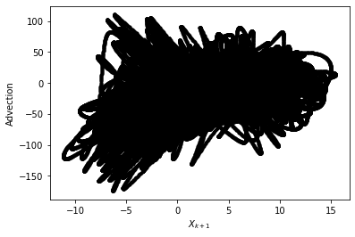
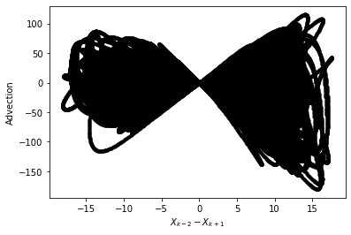
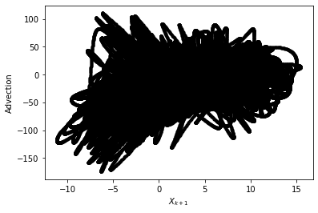
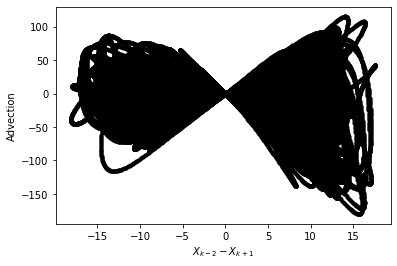
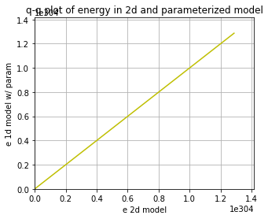
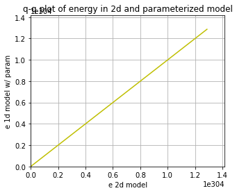

Using neural networks to parameterize advection in L96
Contents
Using neural networks to parameterize advection in L96¶
import matplotlib.pyplot as plt
import numpy as np
from IPython.display import HTML
from L96_model import (
L96,
RK2,
RK4,
EulerFwd,
L96_eq1_xdot,
integrate_L96_2t,
)
from matplotlib.animation import FuncAnimation
time_method = EulerFwd
Introduction¶
We are only going to use the single equation model from Lorenz (1996), or equation 3.1:
The reason we do this is because the advection term has a much larger control on the stability of the system than the scale-interaction term. It is fairly difficult to learn a model for the sub-grid scale term that causes L96 to go unstable so long as the timestep is sufficient to keep the advection term stable.
We want to to look into the stability of a learned parameterization, but to explore the stability in more detail we are going to focus on learning a neural-network for the advection.
It turns out this is rather challening, despite some early indications that it would be easy while I was still learning how to do everything!
Building a 1d and 2d version of the single-equation L96 model:¶
The ‘1d’ in time, or advectionless version of L96 reduces to:
the steady state solution is simply:
and the time-dependent solution is an exponential:
We are going to generate both 2d (w/ advection) and 1d (w/o advection) versions of the L96 model. The 2d model will then be used as training data to build a non-local neural network that can reproduce the effect of including the advection term.
# - This is a standard GCM class including a polynomial parameterization in rhs of equation for tendency.
# In this experiment we will not be using the parameterization in this class but have left it for generality.
class GCM:
def __init__(self, F, parameterization, time_stepping=time_method):
self.F = F
self.parameterization = parameterization
self.time_stepping = time_stepping
def rhs(self, X, param):
return L96_eq1_xdot(X, self.F) + self.parameterization(param, X, self.F)
def __call__(self, X0, dt, nt, param=[0]):
# X0 - initial conditions, dt - time increment, nt - number of forward steps to take
# param - parameters of our closure
time, hist, X = (
dt * np.arange(nt + 1),
np.zeros((nt + 1, len(X0))) * np.nan,
X0.copy(),
)
hist[0] = X
for n in range(nt):
X = self.time_stepping(self.rhs, dt, X, param)
hist[n + 1], time[n + 1] = X, dt * (n + 1)
return hist, time
# - This is the same as the GCM with one notable exception.
# We have set the advection flag to False in the RHS of the L96 equation.
class GCM_1d:
def __init__(self, F, parameterization, time_stepping=time_method):
self.F = F
self.parameterization = parameterization
self.time_stepping = time_stepping
def rhs(self, X, param):
return L96_eq1_xdot(X, self.F, advect=False) + self.parameterization(
param, X, self.F
)
def __call__(self, X0, dt, nt, param=[0]):
# X0 - initial conditions, dt - time increment, nt - number of forward steps to take
# param - parameters of our closure
time, hist, X = (
dt * np.arange(nt + 1),
np.zeros((nt + 1, len(X0))) * np.nan,
X0.copy(),
)
hist[0] = X
for n in range(nt):
X = self.time_stepping(self.rhs, dt, X, param)
hist[n + 1], time[n + 1] = X, dt * (n + 1)
return hist, time
Sample configuration¶
First we will run the 2d and 1d version of the model with a modest forcing of \(F=10\).
We are going to try to simulate the effect of climate model drift on parameter space by running the same model but with \(F=100\).
# Chose a modest forcing and simulate for 100 cycles
Forcing, dt, T = 10, 0.001, 10
Forcing_x10 = Forcing * 10
# Choose an random set of initial conditions
b = 5
init_cond = b * np.random.randn(8)
# ----------------------------------------------------------------
# We create the template 2d GCM here with the polynomial parameterization
# this model will be used to generate training data to learn the advection term.
naive_parameterization = lambda param, X, F: np.polyval(param, X)
gcm_2d = GCM(Forcing, naive_parameterization)
# ----------------------------------------------------------------
# We also create a super GCM for simulation with the forcing of 100.
# This will be used as the truth when we test the ability of the 1d model with the neural network to
# work outside of the parmameter space it was trained.
gcm_2d_x10 = GCM(Forcing_x10, naive_parameterization)
# ----------------------------------------------------------------
# Finally,we build the 1d GCM including the polynomial parameterization,
# and we create the corresponding super GCM with forcing squared.
gcm_1d = GCM_1d(Forcing, naive_parameterization)
gcm_1d_x10 = GCM_1d(Forcing_x10, naive_parameterization)
# Running the 2d and 1d versions of the GCM and GCM with F=100 ("_x10")
x2d, t2d = gcm_2d(
init_cond,
dt,
int(T / dt),
[
0.0,
],
)
x2d_x10, t2d_x10 = gcm_2d_x10(
init_cond,
dt,
int(T / dt),
[
0.0,
],
)
x1d, t1d = gcm_1d(
init_cond,
dt,
int(T / dt),
[
0.0,
],
)
x1d_x10, t1d_x10 = gcm_1d_x10(
init_cond,
dt,
int(T / dt),
[
0.0,
],
)
/usr/share/miniconda/envs/L96M2lines/lib/python3.9/site-packages/numpy/lib/polynomial.py:771: RuntimeWarning: invalid value encountered in multiply
y = y * x + p[i]
Metrics:¶
We are going to track the momentum and energy of L96 via the following metrics:
Energy:¶
These metrics are chosen to track the system. We are looking for a conservative property of the L96 system. It turns out in the single equation form of the L96 problem one of these two metrics is conserved by the advection process, which is the energy like term.
for tup in [2, T]:
F, ax = plt.subplots(1, 2, figsize=(10, 4))
a = ax.ravel()[0]
a.plot(t1d, np.sum(x1d, axis=1), label="1d", color="r", linewidth=2)
a.plot(t2d, np.sum(x2d, axis=1), label="2d", color="b", linewidth=2)
a.legend()
a.grid(True)
a.set_title("L96 momentum")
a.set_xlabel("t")
a.set_ylabel(r"$\sum_k X_k$")
a.set_xlim(0, tup)
a = ax.ravel()[1]
a.plot(t1d, np.sum(x1d**2, axis=1), label="1d", color="r", linewidth=2)
a.plot(t2d, np.sum(x2d**2, axis=1), label="2d", color="b", linewidth=2)
a.legend()
a.grid(True)
a.set_title("L96 energy")
a.set_xlabel("t")
a.set_ylabel(r"$\sum_k X_k^2$")
a.set_xlim(0, tup)
F.tight_layout();
Demo: Conservation of energy in L96¶
To demonstrate the conservation of energy in L96 advection we build a model with 0 forcing and 0 damping.
Note that the cyan line is an experiment only undergoing forcing by the advection term. The momentum is clearly not conserved, but the energy is (maybe not in the Euler Forward case…).
# Zero the forcing
Forcing_demo = 0
# Zero the damping via a linear parameterization term:
P_nodamp = [1.0, 0.0]
# Running the 2d and 1d versions of the GCM and GCM with squared forcing ("s")
gcm_2d_demo = GCM(Forcing_demo, naive_parameterization)
# The parameterization here is countering the decay term to demonstrate the conservation of this system
x2d_demo, t2d_demo = gcm_2d_demo(init_cond, dt, int(T / dt), P_nodamp)
for tup in [2, T]:
F, ax = plt.subplots(1, 2, figsize=(10, 4))
a = ax.ravel()[0]
a.plot(
t2d_demo,
np.sum(x2d_demo, axis=1),
label="2d, F=0 no damp",
color="c",
linewidth=2,
)
a.plot(t2d, np.sum(x2d, axis=1), label="2d, F=10", color="b", linewidth=2)
a.legend()
a.grid(True)
a.set_title("L96 momentum")
a.set_xlabel("t")
a.set_ylabel(r"$\sum_k X_k$")
a.set_xlim(0, tup)
a = ax.ravel()[1]
a.plot(
t2d_demo,
np.sum(x2d_demo**2, axis=1),
label="2d, F=0 no damp",
color="c",
linewidth=2,
)
a.plot(t2d, np.sum(x2d**2, axis=1), label="2d, F=10", color="b", linewidth=2)
a.legend()
a.grid(True)
a.set_title("L96 energy")
a.set_xlabel("t")
a.set_ylabel(r"$\sum_k X_k^2$")
a.set_xlim(0, tup)
F.tight_layout();
Building a dataset of advection tendencies to learn¶
In the next section we are going to create a dataset of advection tendencies to learn
N = 50000
X = []
Xm1 = []
Xm2 = []
Xp1 = []
Adv = []
# randomize the initial condition and run 1000 time-step spin up with the real world model
init_condr = 10 * np.random.randn(8)
x_2, _ = gcm_2d(
init_condr,
0.001,
1000,
[
0.0,
],
)
for ti in range(N):
# Set the initial condition from the spin up/2d model
init_condr_up = x_2[-1, :]
# Real world values
x_2, _ = gcm_2d(
init_condr_up,
0.001,
1,
[
0.0,
],
)
# Simple model values
x_1, _ = gcm_1d(
init_condr_up,
0.001,
1,
[
0.0,
],
)
# This is the difference in the tendency term due to neglecting 2d processes per time-step
Adv.append((x_2[-1, :] - x_1[-1, :]).ravel() / 0.001)
# Storing the state variable and its rolled forms for plotting and learning convenience
X.append(x_1[-1, :].ravel())
Xm1.append(np.roll(x_1[-1, :], 1).ravel())
Xm2.append(np.roll(x_1[-1, :], 2).ravel())
Xp1.append(np.roll(x_1[-1, :], -1).ravel())
X = np.array(X)
Xm1 = np.array(Xm1)
Xm2 = np.array(Xm2)
Xp1 = np.array(Xp1)
Adv = np.array(Adv)
Choosing a parameter to parameterize from¶
If we were simply looking at data and knew that the advection term was a missing force, we might start by looking at correlations with \(X_k\) values, but we would quickly relize that this is not effective.
Even taking part of the actual advection term does not yield a useful feature parameter
plt.figure()
plt.plot(X, Adv, "k.")
plt.xlabel("$X_{k}$")
plt.ylabel("Advection")
plt.figure()
plt.plot(Xm1, Adv, "k.")
plt.xlabel("$X_{k-1}$")
plt.ylabel("Advection")
plt.figure()
plt.plot(Xp1, Adv, "k.")
plt.xlabel("$X_{k+1}$")
plt.ylabel("Advection")
plt.figure()
plt.plot(Xm2 - Xp1, Adv, "k.")
plt.xlabel("$X_{k-2}-X_{k+1}$")
plt.ylabel("Advection")
Text(0, 0.5, 'Advection')
 



Let’s now just assume that we knew the form of the advection term. We now get something that looks like a 1:1 linear relationship between the observed advection term and the correct feature parameter. It is not perfect because the values we are using for \(X_k\) are not consistent with the RK4 time stepping (if we used forward Euler we would get a perfit fit).
# We are going to assume we know the feature variable that we need to train the model.
# However, because of sampling across a time-step we will not fit a perfect 1:1,
# we end up with something very close to 1:1, but we will use a higher order polynomial that will
# fail when used outside the training data.
plt.figure(figsize=(5, 4))
Feature = -Xm1 * (np.array(Xm2) - np.array(Xp1))
plt.plot(Feature, Adv, "r.")
plt.xlabel("$X_{k-1}(X_{k-2}-X_{k+1})$")
plt.ylabel("Advection tendency")
# Here use a 10th order polynomial that is it to the advection tendencies.
# This parameterization will probably fail when used outside of the training data.
P = np.polyfit(np.array(Feature).ravel(), np.array(Adv).ravel(), 1)
print("Fit (slope/bias): ", P)
FS = [-200, 200]
plt.plot(FS, np.polyval(P, FS), "g-", label="polynomial parameterization")
plt.plot(FS, FS, "k--", label="1:1")
plt.xlim(-200, 200)
plt.ylim(-200, 200)
plt.grid(True)
Fit (slope/bias): [ 1.00113982 -0.00638561]
# Create a new 1d GCM with a parameterization for the advection based on the known advection parameter
advection_parameterization = lambda param, X, F: np.polyval(
param, -np.roll(X, 1) * (np.roll(X, 2) - np.roll(X, -1))
)
gcm_1d_padv = GCM_1d(Forcing, advection_parameterization)
gcm_1d_padv_x10 = GCM_1d(Forcing_x10, advection_parameterization)
# Here is the 1d GCM with the learned advection via the linear parameterization
xplinear, tplinear = gcm_1d_padv(init_cond, dt, int(T / dt), P)
# And the same 1d GCM applied out of sample
xplinear_x10, tplinear_x10 = gcm_1d_padv_x10(init_cond, dt, int(T / dt), P)
/tmp/ipykernel_2174/2415865238.py:3: RuntimeWarning: overflow encountered in multiply
param, -np.roll(X, 1) * (np.roll(X, 2) - np.roll(X, -1))
/usr/share/miniconda/envs/L96M2lines/lib/python3.9/site-packages/numpy/lib/polynomial.py:771: RuntimeWarning: invalid value encountered in multiply
y = y * x + p[i]
def CompExps(Exp1, ExpN):
# Exp1 - reference experiment list
# ExpN - list of comparison experiments
try:
T1 = Exp1[0]
X1 = Exp1[1]
L1 = Exp1[2]
F, ax = plt.subplots(1, 2, figsize=(10, 4))
a = ax.ravel()[0]
a.plot(T1, np.sum(X1, axis=1), label=L1, color="k", linewidth=3)
a = ax.ravel()[1]
a.plot(T1, np.sum(X1**2, axis=1), label=L1, color="k", linewidth=3)
F2, ax2 = plt.subplots(1, figsize=(5, 4))
for Exp in ExpN:
TN = Exp[0]
XN = Exp[1]
LN = Exp[2]
a = ax.ravel()[0]
a.plot(TN, np.sum(XN, axis=1), label=LN, linewidth=2)
a = ax.ravel()[1]
a.plot(TN, np.sum(XN**2, axis=1), label=LN, linewidth=2)
_X = []
_Y = []
for ii in range(1, 100, 1):
_X.append(np.percentile(np.sum(X1[int(5 // dt) :] ** 2, axis=1), ii))
_Y.append(np.percentile(np.sum(XN[int(5 // dt) :] ** 2, axis=1), ii))
ax2.plot(_X, _Y, ".-", label=LN)
for ii in range(2):
a = ax.ravel()[ii]
a.legend()
a.grid(True)
ax[0].set(ylabel=r"$\sum_k X_k$", xlabel=r"$t$")
ax[1].set(ylabel=r"$\sum_k X_k^2$", xlabel=r"$t$")
F.tight_layout()
ax2.grid(True)
ax2.set(
xlabel="e 2d model",
ylabel="e 1d model w/ param",
title="q-q plot of energy in 2d and parameterized model",
)
LIM = np.nanmax(list(_X) + list(_Y))
ax2.set_xlim(0, LIM * 1.1)
ax2.set_ylim(0, LIM * 1.1)
ax2.plot([0, LIM], [0, LIM], "y-")
pass
except:
pass
CompExps(
[t2d, x2d, "2d"],
[
[tplinear, xplinear, "1d w/ linear"],
],
)
CompExps(
[t2d_x10, x2d_x10, "2d"],
[
[tplinear_x10, xplinear_x10, "1d w/ linear"],
],
)
/usr/share/miniconda/envs/L96M2lines/lib/python3.9/site-packages/numpy/core/fromnumeric.py:86: RuntimeWarning: invalid value encountered in reduce
return ufunc.reduce(obj, axis, dtype, out, **passkwargs)
/tmp/ipykernel_2174/2792372065.py:13: RuntimeWarning: overflow encountered in square
a.plot(T1, np.sum(X1**2, axis=1), label=L1, color="k", linewidth=3)
/tmp/ipykernel_2174/2792372065.py:25: RuntimeWarning: overflow encountered in square
a.plot(TN, np.sum(XN**2, axis=1), label=LN, linewidth=2)
/tmp/ipykernel_2174/2792372065.py:48: RuntimeWarning: All-NaN axis encountered
LIM = np.nanmax(list(_X) + list(_Y))
What if we chose the wrong feature?¶
It turns out you can find features that are approximately correct and build a decent model for the advection
# Now we use a feature that is wrong to train the model
plt.figure()
Feature = -(np.array(Xm2) - np.array(Xp1) * np.array(Xm1))
plt.plot(Feature, Adv, "r.")
plt.xlabel("$(X_{k-1}-X_{k+1})$")
plt.ylabel("Advection tendency/Forcing")
# Here use a 10th order polynomial that is it to the advection tendencies.
# This parameterization will probably fail when used outside of the training data.
P_wrong = np.polyfit(np.array(Feature).ravel(), np.array(Adv).ravel(), 1)
FS = np.sort(np.array(Feature).ravel())
plt.plot(FS, np.polyval(P_wrong, FS), "g-", label="polynomial parameterization");
# Create a new 1d GCM with a 2d parameterization
advection_parameterization_wrong = lambda param, X, F: np.polyval(
param, -(np.roll(X, 2) - np.roll(X, -1) * np.roll(X, 1))
)
gcm_1d_padv_wrong = GCM_1d(Forcing, advection_parameterization_wrong)
# Here is the 1d GCM with the learned advection via the 10th order polynomial
x_wrongp, t_wrongp = gcm_1d_padv_wrong(init_cond, dt, int(T / dt), P_wrong)
CompExps(
[t2d, x2d, "2d"],
[
[t_wrongp, x_wrongp, "1d w/ wrong linear"],
],
)
/tmp/ipykernel_2174/2520304281.py:3: RuntimeWarning: overflow encountered in multiply
param, -(np.roll(X, 2) - np.roll(X, -1) * np.roll(X, 1))
/tmp/ipykernel_2174/2792372065.py:25: RuntimeWarning: overflow encountered in square
a.plot(TN, np.sum(XN**2, axis=1), label=LN, linewidth=2)
Using the wrong feature gave us a very unstable model with advection that does not work.
In the following, we will try to learn the advection from a neural network. This result shows that we need to do something quite skillful to have a stable system.
Using the 3-layer non-local neural network¶
Now we can forget about neading to know the right form of the advection term. We are instead just going to throw the information from the advection scheme to the non-local neural network and let it learn the advection for itself.
These follow the templates from the exercise led by Janni in week 4.
I’m quite new to neural networks, so please let me know if you see any obvious mistakes in my approach!
import torch
import torch.nn.functional as F
import torch.utils.data as Data
import torchvision
from sklearn.metrics import r2_score
from torch import nn, optim
from torch.autograd import Variable
np.random.seed(14) # For reproducibility
torch.manual_seed(14) # For reproducibility
<torch._C.Generator at 0x7f12f5ff45f0>
I’m going to start by scaling the data so that it is approximately order 1.¶
It looks like we can scaling \(X\) and the advection with the forcing and forcing squared, respectively (we will come back to this assumption).
plt.figure()
plt.plot(X, Adv, "k.")
plt.xlabel("$X_k$")
plt.ylabel("$Adv_k$")
X_F = X / Forcing
Adv_F = Adv / Forcing**2
print("Advection RMS:", np.sqrt(np.mean(Adv**2)))
print("X RMS:", np.sqrt(np.mean(X**2)))
plt.figure()
plt.plot(X_F, Adv_F, "k.")
plt.xlabel("$X_k/F$")
plt.ylabel("$Adv_k/F^2$")
print("Scaled Advection RMS:", np.sqrt(np.mean(Adv_F**2)))
print("Scaled X RMS:", np.sqrt(np.mean(X_F**2)))
Advection RMS: 30.715177625951025
X RMS: 5.204430777904761
Scaled Advection RMS: 0.3071517762595103
Scaled X RMS: 0.520443077790476
# Split into 80% training and 20% testing.
L = int(len(X) * 0.8)
# Create non local training data
# Define a data loader (8 inputs, 8 outputs)
# Define our X,Y pairs (state, subgrid tendency) for the linear regression local network.local_torch_dataset = Data.TensorDataset(
torch_dataset = Data.TensorDataset(
torch.from_numpy(np.array(X_F[:L])).double(),
torch.from_numpy(np.array(Adv_F[:L])).double(),
)
BATCH_SIZE = 1024 # Number of sample in each batch
loader = Data.DataLoader(dataset=torch_dataset, batch_size=BATCH_SIZE, shuffle=True)
print("N training data: ", len(X_F[:L]))
N training data: 40000
print("N testing data: ", len(X_F[L:]))
# Define a test dataloader (8 inputs, 8 outputs)
torch_dataset_test = Data.TensorDataset(
torch.from_numpy(np.array(X_F[L:])).double(),
torch.from_numpy(np.array(Adv_F[L:])).double(),
)
loader_test = Data.DataLoader(
dataset=torch_dataset_test, batch_size=BATCH_SIZE, shuffle=True
)
N testing data: 10000
# define network structure in pytorch
import torch.nn.functional as FF
class Net_ANN(nn.Module):
def __init__(self):
super(Net_ANN, self).__init__()
self.linear1 = nn.Linear(8, 16) # 8 inputs, 16 neurons for first hidden layer
self.linear2 = nn.Linear(16, 16) # 16 neurons for second hidden layer
self.linear3 = nn.Linear(16, 8) # 8 outputs
# self.lin_drop = nn.Dropout(0.1) #regularization method to prevent overfitting.
def forward(self, x):
x = FF.relu(self.linear1(x))
x = FF.relu(self.linear2(x))
x = self.linear3(x)
return x
def train_model(net, criterion, trainloader, optimizer):
net.train()
test_loss = 0
for step, (batch_x, batch_y) in enumerate(trainloader): # for each training step
b_x = Variable(batch_x) # Inputs
b_y = Variable(batch_y) # outputs
if (
len(b_x.shape) == 1
): # If is needed to add a dummy dimension if our inputs are 1D (where each number is a different sample)
prediction = torch.squeeze(
net(torch.unsqueeze(b_x, 1))
) # input x and predict based on x
else:
prediction = net(b_x)
loss = criterion(prediction, b_y) # Calculating loss
optimizer.zero_grad() # clear gradients for next train
loss.backward() # backpropagation, compute gradients
optimizer.step() # apply gradients to update weights
def test_model(net, criterion, trainloader, optimizer, text="validation"):
net.eval() # Evaluation mode (important when having dropout layers)
test_loss = 0
with torch.no_grad():
for step, (batch_x, batch_y) in enumerate(
trainloader
): # for each training step
b_x = Variable(batch_x) # Inputs
b_y = Variable(batch_y) # outputs
if (
len(b_x.shape) == 1
): # If is needed to add a dummy dimension if our inputs are 1D (where each number is a different sample)
prediction = torch.squeeze(
net(torch.unsqueeze(b_x, 1))
) # input x and predict based on x
else:
prediction = net(b_x)
loss = criterion(prediction, b_y) # Calculating loss
test_loss = test_loss + loss.data.numpy() # Keep track of the loss
test_loss /= len(trainloader) # dividing by the number of batches
# print(len(trainloader))
print(text + " loss:", test_loss)
return test_loss
criterion = torch.nn.MSELoss() # MSE loss function
torch.manual_seed(14) # For reproducibility
nn_3l = Net_ANN().double()
n_epochs = 20 # Number of epocs
optimizer = optim.Adam(nn_3l.parameters(), lr=0.03)
validation_loss = list()
train_loss = list()
# time0 = time()
for epoch in range(1, n_epochs + 1):
train_model(nn_3l, criterion, loader, optimizer)
train_loss.append(test_model(nn_3l, criterion, loader, optimizer, "train"))
validation_loss.append(test_model(nn_3l, criterion, loader_test, optimizer))
plt.plot(train_loss, "b", label="training loss")
plt.plot(validation_loss, "r", label="validation loss")
plt.legend();
train loss: 0.024981268734307706
validation loss: 0.02527665434750388
train loss: 0.01625503540784127
validation loss: 0.015887441827372867
train loss: 0.013324872344339203
validation loss: 0.014100200541902908
train loss: 0.012640951854928206
validation loss: 0.014186483521781371
train loss: 0.011364716507956622
validation loss: 0.012902166281479582
train loss: 0.011142893428746904
validation loss: 0.013002609704149497
train loss: 0.010452965919789028
validation loss: 0.012385870635987966
train loss: 0.010213674286709802
validation loss: 0.012811327901503055
train loss: 0.009473848165103436
validation loss: 0.011656497581091168
train loss: 0.009989901507911911
validation loss: 0.012303139326924934
train loss: 0.010072875829359009
validation loss: 0.01251237619085501
train loss: 0.009774016912415834
validation loss: 0.010922547901893601
train loss: 0.009312246165471052
validation loss: 0.011022063204229753
train loss: 0.009988677986948784
validation loss: 0.012406793864079085
train loss: 0.010795931008549583
validation loss: 0.012592968550367198
train loss: 0.010498832917621225
validation loss: 0.011797315596262226
train loss: 0.009034528827760409
validation loss: 0.011020602897413159
train loss: 0.009087730527289794
validation loss: 0.011750539536533652
train loss: 0.008811345278581533
validation loss: 0.011647663904873894
train loss: 0.008380366915260078
validation loss: 0.010713669384155237
# The neural network does a pretty good job predicting the advection tendencies
preds22 = nn_3l(torch.from_numpy(np.array(X_F)).double())
plt.figure()
plt.plot(preds22.detach().numpy()[0:, 2], label="NN Predicted values")
plt.plot(Adv_F[:, 2], label="True values")
plt.legend()
plt.figure()
plt.plot(Adv_F[:, 2], preds22.detach().numpy()[0:, 2], "k.")
plt.xlabel("Actual")
plt.ylabel("Prediction")
pass
Xt = init_cond
Advr = -np.roll(Xt, 1) * (np.roll(Xt, 2) - np.roll(Xt, -1))
nnAdv = nn_3l(torch.from_numpy(np.array(Xt / Forcing)).double()).detach().numpy()
plt.figure()
plt.plot(Advr, "k-")
plt.plot(nnAdv * Forcing**2, "r-")
[<matplotlib.lines.Line2D at 0x7f12dff34ac0>]
# - a GCM class including a neural network parameterization in rhs of equation for tendency
class GCM_network:
def __init__(self, F, network, time_stepping=time_method):
self.F = F
self.network = network
self.time_stepping = time_stepping
def rhs(self, X, param):
if self.network.linear1.in_features == 1:
X_torch = torch.from_numpy(X / self.F).double()
X_torch = torch.unsqueeze(X_torch, 1)
else:
X_torch = torch.from_numpy(np.expand_dims(X / self.F, 0)).double()
return L96_eq1_xdot(
X,
self.F + self.F**2 * np.squeeze(self.network(X_torch).data.numpy()),
advect=False,
) # Adding NN parameterization
def __call__(self, X0, dt, nt, param=[0]):
# X0 - initial conditions, dt - time increment, nt - number of forward steps to take
# param - parameters of our closure
time, hist, X = (
dt * np.arange(nt + 1),
np.zeros((nt + 1, len(X0))) * np.nan,
X0.copy(),
)
hist[0] = X
for n in range(nt):
X = self.time_stepping(self.rhs, dt, X, param)
hist[n + 1], time[n + 1] = X, dt * (n + 1)
return hist, time
# Run a test with the parameterization
gcm_nn = GCM_network(Forcing, nn_3l)
xnn, tnn = gcm_nn(init_cond, dt, int(T / (dt)), nn_3l)
gcm_nn_x10 = GCM_network(Forcing_x10, nn_3l)
xnn_x10, tnn_x10 = gcm_nn_x10(init_cond, dt, int(T / (dt)), nn_3l)
CompExps(
[t2d, x2d, "2d"],
[
[tnn, xnn, "1d w/ neural network"],
],
)
CompExps(
[t2d_x10, x2d_x10, "2d"],
[
[tnn_x10, xnn_x10, "1d w/ neural network"],
],
)
/usr/share/miniconda/envs/L96M2lines/lib/python3.9/site-packages/numpy/core/fromnumeric.py:86: RuntimeWarning: invalid value encountered in reduce
return ufunc.reduce(obj, axis, dtype, out, **passkwargs)
/tmp/ipykernel_2174/2792372065.py:13: RuntimeWarning: overflow encountered in square
a.plot(T1, np.sum(X1**2, axis=1), label=L1, color="k", linewidth=3)
/tmp/ipykernel_2174/2792372065.py:25: RuntimeWarning: overflow encountered in square
a.plot(TN, np.sum(XN**2, axis=1), label=LN, linewidth=2)
/usr/share/miniconda/envs/L96M2lines/lib/python3.9/site-packages/numpy/core/fromnumeric.py:86: RuntimeWarning: overflow encountered in reduce
return ufunc.reduce(obj, axis, dtype, out, **passkwargs)
/tmp/ipykernel_2174/2792372065.py:31: RuntimeWarning: overflow encountered in square
_Y.append(np.percentile(np.sum(XN[int(5 // dt) :] ** 2, axis=1), ii))
/usr/share/miniconda/envs/L96M2lines/lib/python3.9/site-packages/numpy/lib/function_base.py:4009: RuntimeWarning: invalid value encountered in subtract
diff_b_a = subtract(b, a)
/usr/share/miniconda/envs/L96M2lines/lib/python3.9/site-packages/matplotlib/axes/_base.py:2924: RuntimeWarning: overflow encountered in double_scalars
x0, x1 = inverse_trans.transform([x0t - delta, x1t + delta])

/usr/share/miniconda/envs/L96M2lines/lib/python3.9/site-packages/matplotlib/ticker.py:2073: RuntimeWarning: overflow encountered in multiply
steps = self._extended_steps * scale
/usr/share/miniconda/envs/L96M2lines/lib/python3.9/site-packages/matplotlib/ticker.py:2106: RuntimeWarning: overflow encountered in multiply
ticks = np.arange(low, high + 1) * step + best_vmin
---------------------------------------------------------------------------
OverflowError Traceback (most recent call last)
File /usr/share/miniconda/envs/L96M2lines/lib/python3.9/site-packages/IPython/core/formatters.py:339, in BaseFormatter.__call__(self, obj)
337 pass
338 else:
--> 339 return printer(obj)
340 # Finally look for special method names
341 method = get_real_method(obj, self.print_method)
File /usr/share/miniconda/envs/L96M2lines/lib/python3.9/site-packages/IPython/core/pylabtools.py:151, in print_figure(fig, fmt, bbox_inches, base64, **kwargs)
148 from matplotlib.backend_bases import FigureCanvasBase
149 FigureCanvasBase(fig)
--> 151 fig.canvas.print_figure(bytes_io, **kw)
152 data = bytes_io.getvalue()
153 if fmt == 'svg':
File /usr/share/miniconda/envs/L96M2lines/lib/python3.9/site-packages/matplotlib/backend_bases.py:2295, in FigureCanvasBase.print_figure(self, filename, dpi, facecolor, edgecolor, orientation, format, bbox_inches, pad_inches, bbox_extra_artists, backend, **kwargs)
2289 renderer = _get_renderer(
2290 self.figure,
2291 functools.partial(
2292 print_method, orientation=orientation)
2293 )
2294 with getattr(renderer, "_draw_disabled", nullcontext)():
-> 2295 self.figure.draw(renderer)
2297 if bbox_inches:
2298 if bbox_inches == "tight":
File /usr/share/miniconda/envs/L96M2lines/lib/python3.9/site-packages/matplotlib/artist.py:73, in _finalize_rasterization.<locals>.draw_wrapper(artist, renderer, *args, **kwargs)
71 @wraps(draw)
72 def draw_wrapper(artist, renderer, *args, **kwargs):
---> 73 result = draw(artist, renderer, *args, **kwargs)
74 if renderer._rasterizing:
75 renderer.stop_rasterizing()
File /usr/share/miniconda/envs/L96M2lines/lib/python3.9/site-packages/matplotlib/artist.py:50, in allow_rasterization.<locals>.draw_wrapper(artist, renderer)
47 if artist.get_agg_filter() is not None:
48 renderer.start_filter()
---> 50 return draw(artist, renderer)
51 finally:
52 if artist.get_agg_filter() is not None:
File /usr/share/miniconda/envs/L96M2lines/lib/python3.9/site-packages/matplotlib/figure.py:2837, in Figure.draw(self, renderer)
2834 # ValueError can occur when resizing a window.
2836 self.patch.draw(renderer)
-> 2837 mimage._draw_list_compositing_images(
2838 renderer, self, artists, self.suppressComposite)
2840 for sfig in self.subfigs:
2841 sfig.draw(renderer)
File /usr/share/miniconda/envs/L96M2lines/lib/python3.9/site-packages/matplotlib/image.py:132, in _draw_list_compositing_images(renderer, parent, artists, suppress_composite)
130 if not_composite or not has_images:
131 for a in artists:
--> 132 a.draw(renderer)
133 else:
134 # Composite any adjacent images together
135 image_group = []
File /usr/share/miniconda/envs/L96M2lines/lib/python3.9/site-packages/matplotlib/artist.py:50, in allow_rasterization.<locals>.draw_wrapper(artist, renderer)
47 if artist.get_agg_filter() is not None:
48 renderer.start_filter()
---> 50 return draw(artist, renderer)
51 finally:
52 if artist.get_agg_filter() is not None:
File /usr/share/miniconda/envs/L96M2lines/lib/python3.9/site-packages/matplotlib/axes/_base.py:3091, in _AxesBase.draw(self, renderer)
3088 a.draw(renderer)
3089 renderer.stop_rasterizing()
-> 3091 mimage._draw_list_compositing_images(
3092 renderer, self, artists, self.figure.suppressComposite)
3094 renderer.close_group('axes')
3095 self.stale = False
File /usr/share/miniconda/envs/L96M2lines/lib/python3.9/site-packages/matplotlib/image.py:132, in _draw_list_compositing_images(renderer, parent, artists, suppress_composite)
130 if not_composite or not has_images:
131 for a in artists:
--> 132 a.draw(renderer)
133 else:
134 # Composite any adjacent images together
135 image_group = []
File /usr/share/miniconda/envs/L96M2lines/lib/python3.9/site-packages/matplotlib/artist.py:50, in allow_rasterization.<locals>.draw_wrapper(artist, renderer)
47 if artist.get_agg_filter() is not None:
48 renderer.start_filter()
---> 50 return draw(artist, renderer)
51 finally:
52 if artist.get_agg_filter() is not None:
File /usr/share/miniconda/envs/L96M2lines/lib/python3.9/site-packages/matplotlib/axis.py:1158, in Axis.draw(self, renderer, *args, **kwargs)
1155 return
1156 renderer.open_group(__name__, gid=self.get_gid())
-> 1158 ticks_to_draw = self._update_ticks()
1159 ticklabelBoxes, ticklabelBoxes2 = self._get_tick_bboxes(ticks_to_draw,
1160 renderer)
1162 for tick in ticks_to_draw:
File /usr/share/miniconda/envs/L96M2lines/lib/python3.9/site-packages/matplotlib/axis.py:1046, in Axis._update_ticks(self)
1041 """
1042 Update ticks (position and labels) using the current data interval of
1043 the axes. Return the list of ticks that will be drawn.
1044 """
1045 major_locs = self.get_majorticklocs()
-> 1046 major_labels = self.major.formatter.format_ticks(major_locs)
1047 major_ticks = self.get_major_ticks(len(major_locs))
1048 self.major.formatter.set_locs(major_locs)
File /usr/share/miniconda/envs/L96M2lines/lib/python3.9/site-packages/matplotlib/ticker.py:223, in Formatter.format_ticks(self, values)
221 def format_ticks(self, values):
222 """Return the tick labels for all the ticks at once."""
--> 223 self.set_locs(values)
224 return [self(value, i) for i, value in enumerate(values)]
File /usr/share/miniconda/envs/L96M2lines/lib/python3.9/site-packages/matplotlib/ticker.py:713, in ScalarFormatter.set_locs(self, locs)
711 self._compute_offset()
712 self._set_order_of_magnitude()
--> 713 self._set_format()
File /usr/share/miniconda/envs/L96M2lines/lib/python3.9/site-packages/matplotlib/ticker.py:806, in ScalarFormatter._set_format(self)
803 if len(self.locs) < 2:
804 # We needed the end points only for the loc_range calculation.
805 locs = locs[:-2]
--> 806 loc_range_oom = int(math.floor(math.log10(loc_range)))
807 # first estimate:
808 sigfigs = max(0, 3 - loc_range_oom)
OverflowError: cannot convert float infinity to integer
<Figure size 360x288 with 1 Axes>
def my_loss2(inpt, output, target):
# In which we add conservation of "momentum" to our loss function
loss = torch.mean(2 * (output - target) ** 2) + torch.mean(
torch.sum(output, axis=1) ** 2
)
return loss
def train_model2(net, criterion, trainloader, optimizer):
net.train()
test_loss = 0
for step, (batch_x, batch_y) in enumerate(trainloader): # for each training step
b_x = Variable(batch_x) # Inputs
b_y = Variable(batch_y) # outputs
if (
len(b_x.shape) == 1
): # If is needed to add a dummy dimension if our inputs are 1D (where each number is a different sample)
prediction = torch.squeeze(
net(torch.unsqueeze(b_x, 1))
) # input x and predict based on x
else:
prediction = net(b_x)
loss = criterion(b_x, prediction, b_y) # Calculating loss
optimizer.zero_grad() # clear gradients for next train
loss.backward() # backpropagation, compute gradients
optimizer.step() # apply gradients to update weights
def test_model2(net, criterion, trainloader, optimizer, text="validation"):
net.eval() # Evaluation mode (important when having dropout layers)
test_loss = 0
with torch.no_grad():
for step, (batch_x, batch_y) in enumerate(
trainloader
): # for each training step
b_x = Variable(batch_x) # Inputs
b_y = Variable(batch_y) # outputs
if (
len(b_x.shape) == 1
): # If is needed to add a dummy dimension if our inputs are 1D (where each number is a different sample)
prediction = torch.squeeze(
net(torch.unsqueeze(b_x, 1))
) # input x and predict based on x
else:
prediction = net(b_x)
loss = criterion(b_x, prediction, b_y) # Calculating loss
test_loss = test_loss + loss.data.numpy() # Keep track of the loss
test_loss /= len(trainloader) # dividing by the number of batches
# print(len(trainloader))
print(text + " loss:", test_loss)
return test_loss
torch.manual_seed(14) # For reproducibility
nn_3l_loss2 = Net_ANN().double()
n_epochs = 30 # Number of epocs
optimizer = optim.Adam(nn_3l_loss2.parameters(), lr=0.02)
validation_loss = list()
train_loss = list()
# time0 = time()
for epoch in range(1, n_epochs + 1):
train_model2(nn_3l_loss2, my_loss2, loader, optimizer)
train_loss.append(test_model2(nn_3l_loss2, my_loss2, loader, optimizer, "train"))
validation_loss.append(test_model2(nn_3l_loss2, my_loss2, loader_test, optimizer))
plt.plot(train_loss, "b", label="training loss")
plt.plot(validation_loss, "r", label="validation loss")
plt.legend();
train loss: 0.13825881817411328
validation loss: 0.1242828007198536
train loss: 0.08606253992764563
validation loss: 0.07661876776653534
train loss: 0.06769808715086637
validation loss: 0.06767340214485722
train loss: 0.057214653748682565
validation loss: 0.060208040614357174
train loss: 0.04932472744158713
validation loss: 0.05070585732606775
train loss: 0.04668718421039701
validation loss: 0.04652161960667669
train loss: 0.04371384219870579
validation loss: 0.042996695669248144
train loss: 0.04319865558572623
validation loss: 0.04326771259012101
train loss: 0.042318168901077646
validation loss: 0.04210456651577568
train loss: 0.041456180629844616
validation loss: 0.04190811714429905
train loss: 0.04016082234097968
validation loss: 0.04000730596066489
train loss: 0.04258187106528928
validation loss: 0.04378853974563562
train loss: 0.0388232547912115
validation loss: 0.039931163800665026
train loss: 0.038416826943387716
validation loss: 0.03964544362853006
train loss: 0.038347458835184575
validation loss: 0.03932543352138362
train loss: 0.039501706733777356
validation loss: 0.04112425806481001
train loss: 0.03706295975053424
validation loss: 0.03995481150909573
train loss: 0.03712117444144991
validation loss: 0.039664067700213426
train loss: 0.03627638003606895
validation loss: 0.03864779442158357
train loss: 0.03577008541205403
validation loss: 0.03866528487517827
train loss: 0.03655978324148376
validation loss: 0.0391776491971861
train loss: 0.03648651278414135
validation loss: 0.03840050798036886
train loss: 0.03670908106754181
validation loss: 0.039007765257578896
train loss: 0.03652621894880155
validation loss: 0.037807040019569936
train loss: 0.035942482791946825
validation loss: 0.03797223792751849
train loss: 0.04227890575353763
validation loss: 0.04496876489988495
train loss: 0.03554137344191617
validation loss: 0.03797482117627596
train loss: 0.03510256965223685
validation loss: 0.03735990636464214
train loss: 0.0368396334839254
validation loss: 0.039446648469373104
train loss: 0.035010115602471366
validation loss: 0.037338258122796064
# The neural network does a pretty good job predicting the advection tendencies
preds22o = nn_3l(torch.from_numpy(np.array(X_F)).double())
preds22 = nn_3l_loss2(torch.from_numpy(np.array(X_F)).double())
plt.figure()
plt.plot(preds22.detach().numpy()[0:, 2], label="NN Predicted values")
plt.plot(Adv_F[:, 2], label="True values")
plt.legend()
plt.figure()
plt.plot(Adv_F[:, 2], preds22.detach().numpy()[0:, 2], "k.")
plt.xlabel("Actual")
plt.ylabel("Prediction")
plt.figure()
plt.plot(np.sum(preds22o.detach().numpy(), axis=1), "r.")
plt.plot(np.sum(preds22.detach().numpy(), axis=1), "k.")
plt.ylabel("Prediction momentum")
Xt = init_cond
Advr = -np.roll(Xt, 1) * (np.roll(Xt, 2) - np.roll(Xt, -1))
nnAdv = nn_3l_loss2(torch.from_numpy(np.array(Xt / Forcing)).double()).detach().numpy()
plt.figure()
plt.plot(Advr, "k-", label="actual")
plt.plot(nnAdv * Forcing**2, "r-", label="predicted")
pass;
gcm_nn2 = GCM_network(Forcing, nn_3l_loss2)
xnn2, tnn2 = gcm_nn2(init_cond, dt, int(T / (dt)), nn_3l_loss2)
gcm_nn2_x10 = GCM_network(Forcing_x10, nn_3l_loss2)
xnn2_x10, tnn2_x10 = gcm_nn2_x10(init_cond, dt, int(T / (dt)), nn_3l_loss2)
CompExps(
[t2d, x2d, "2d"],
[
[tnn2, xnn2, "1d w/ NN conserving momentum"],
],
)
CompExps(
[t2d_x10, x2d_x10, "2d"],
[
[tnn2_x10, xnn2_x10, "1d w/ NN conserving momentum"],
],
)
/tmp/ipykernel_2174/2792372065.py:13: RuntimeWarning: overflow encountered in square
a.plot(T1, np.sum(X1**2, axis=1), label=L1, color="k", linewidth=3)
/tmp/ipykernel_2174/2792372065.py:25: RuntimeWarning: overflow encountered in square
a.plot(TN, np.sum(XN**2, axis=1), label=LN, linewidth=2)
/tmp/ipykernel_2174/2792372065.py:31: RuntimeWarning: overflow encountered in square
_Y.append(np.percentile(np.sum(XN[int(5 // dt) :] ** 2, axis=1), ii))
/tmp/ipykernel_2174/2792372065.py:49: RuntimeWarning: overflow encountered in double_scalars
ax2.set_xlim(0, LIM * 1.1)
 

How about with some regularization?¶
torch.manual_seed(14) # For reproducibility
nn_3l_loss3 = Net_ANN().double()
n_epochs = 50 # Number of epocs
optimizer = optim.Adam(nn_3l_loss3.parameters(), lr=0.01, weight_decay=0.01)
validation_loss = list()
train_loss = list()
# time0 = time()
for epoch in range(1, n_epochs + 1):
train_model2(nn_3l_loss3, my_loss2, loader, optimizer)
train_loss.append(test_model2(nn_3l_loss3, my_loss2, loader, optimizer, "train"))
validation_loss.append(test_model2(nn_3l_loss3, my_loss2, loader_test, optimizer))
plt.plot(train_loss, "b", label="training loss")
plt.plot(validation_loss, "r", label="validation loss")
plt.legend();
train loss: 0.17566803144893656
validation loss: 0.15543120095755464
train loss: 0.13990824186294534
validation loss: 0.1202943125435714
train loss: 0.1296247988210174
validation loss: 0.11222959678966045
train loss: 0.12553117199409122
validation loss: 0.10798051935555406
train loss: 0.12246296465343387
validation loss: 0.10626966530752457
train loss: 0.12014338728719462
validation loss: 0.10486682918632231
train loss: 0.1192747999087675
validation loss: 0.10403299856150441
train loss: 0.1178318624350158
validation loss: 0.10320847111939654
train loss: 0.11532201029477955
validation loss: 0.10145847279655432
train loss: 0.11392654725775922
validation loss: 0.09932847338990461
train loss: 0.11069383221391622
validation loss: 0.09643158174059288
train loss: 0.109332864744663
validation loss: 0.09540477250567111
train loss: 0.1088429401260855
validation loss: 0.09528803072875655
train loss: 0.10851445696766324
validation loss: 0.09497601576590609
train loss: 0.1079251724173195
validation loss: 0.09461363001491353
train loss: 0.10812783468332517
validation loss: 0.09486375459305839
train loss: 0.10804635429991585
validation loss: 0.09437213574426113
train loss: 0.10813770740892684
validation loss: 0.09403247192604418
train loss: 0.10724909360945911
validation loss: 0.0942562160994945
train loss: 0.10788569625182624
validation loss: 0.0941463684583462
train loss: 0.10731806263955379
validation loss: 0.0937976526887627
train loss: 0.10727861289935184
validation loss: 0.09417925521166763
train loss: 0.10831623420942431
validation loss: 0.09461301342309673
train loss: 0.10686130637616116
validation loss: 0.09345468363373513
train loss: 0.10744288589787039
validation loss: 0.09315762961007076
train loss: 0.10831852596857545
validation loss: 0.09404915128246567
train loss: 0.10782374438320234
validation loss: 0.09422941549493112
train loss: 0.10728211041898823
validation loss: 0.09403505220061209
train loss: 0.10701394530055316
validation loss: 0.09337173046897398
train loss: 0.1069710737739572
validation loss: 0.09370051075321491
train loss: 0.10748520121794905
validation loss: 0.09404596316655607
train loss: 0.10802217582394827
validation loss: 0.09454758061557483
train loss: 0.10813349894315845
validation loss: 0.09407845767997786
train loss: 0.1079007440119966
validation loss: 0.09452324851519267
train loss: 0.10754292415874744
validation loss: 0.09420122700921627
train loss: 0.10751211091684065
validation loss: 0.09411917190093728
train loss: 0.10760183817322903
validation loss: 0.09404002477307946
train loss: 0.10803628138222705
validation loss: 0.09466850179240667
train loss: 0.10764643527070532
validation loss: 0.09429507068662671
train loss: 0.10770357257951217
validation loss: 0.0938858399523111
train loss: 0.10847651946887286
validation loss: 0.09465909312677837
train loss: 0.10725196113830185
validation loss: 0.09346739453931013
train loss: 0.10767898109788825
validation loss: 0.09372876546415762
train loss: 0.10827504686346612
validation loss: 0.094328132727221
train loss: 0.10848836360669892
validation loss: 0.09481914344731393
train loss: 0.10837361314912589
validation loss: 0.09385249645580712
train loss: 0.1080177552573011
validation loss: 0.09444269474367803
train loss: 0.1072015779635056
validation loss: 0.09423777952327346
train loss: 0.10767053691609277
validation loss: 0.09380625778402613
train loss: 0.1074607794819655
validation loss: 0.0944672951362388
# The neural network does a pretty good job predicting the advection tendencies
preds22o = nn_3l(torch.from_numpy(np.array(X_F)).double())
preds22 = nn_3l_loss3(torch.from_numpy(np.array(X_F)).double())
plt.figure()
plt.plot(preds22.detach().numpy()[0:, 2], label="NN Predicted values")
plt.plot(Adv_F[:, 2], label="True values")
plt.legend()
plt.figure()
plt.plot(Adv_F[:, 2], preds22.detach().numpy()[0:, 2], "k.")
plt.xlabel("Actual")
plt.ylabel("Prediction")
plt.figure()
plt.plot(np.sum(preds22o.detach().numpy(), axis=1), "r.")
plt.plot(np.sum(preds22.detach().numpy(), axis=1), "k.")
plt.ylabel("Prediction momentum")
Xt = init_cond
Advr = -np.roll(Xt, 1) * (np.roll(Xt, 2) - np.roll(Xt, -1))
nnAdv = nn_3l_loss3(torch.from_numpy(np.array(Xt / Forcing)).double()).detach().numpy()
plt.figure()
plt.plot(Advr, "k-", label="actual")
plt.plot(nnAdv * Forcing**2, "r-", label="predicted")
pass;

gcm_nn3 = GCM_network(Forcing, nn_3l_loss3)
xnn3, tnn3 = gcm_nn3(init_cond, dt, int(T / (dt)), nn_3l_loss3)
gcm_nn3_x10 = GCM_network(Forcing_x10, nn_3l_loss3)
xnn3_x10, tnn3_x10 = gcm_nn3_x10(init_cond, dt, int(T / (dt)), nn_3l_loss3)
CompExps(
[t2d, x2d, "2d"],
[
[tnn3, xnn3, "1d w/ NN momentum reg."],
[t1d, x1d, "1d "],
],
)
CompExps(
[t2d, x2d, "2d"],
[
[tnn3_x10, xnn3_x10, "1d w/ NN momentum reg."],
],
)
Try a different scaling term¶
Could scaling with the Forcing be the issue?
# Use the advection tendencies, splitting into 80% training and 20% testing.
L = int(len(X) * 0.8)
print(L)
ScX = np.sqrt(np.mean(X**2))
X_S = X / ScX
ScA = np.sqrt(np.mean(Adv**2))
Adv_S = Adv / ScA
# Create non local training data
# Define a data loader (8 inputs, 8 outputs)
# Define our X,Y pairs (state, subgrid tendency) for the linear regression local network.local_torch_dataset = Data.TensorDataset(
torch_dataset = Data.TensorDataset(
torch.from_numpy(np.array(X_S[:L])).double(),
torch.from_numpy(np.array(Adv_S[:L])).double(),
)
BATCH_SIZE = 1024 # Number of sample in each batch
loader = Data.DataLoader(dataset=torch_dataset, batch_size=BATCH_SIZE, shuffle=True)
# Define a test dataloader (8 inputs, 8 outputs)
torch_dataset_test = Data.TensorDataset(
torch.from_numpy(np.array(X_S[L:])).double(),
torch.from_numpy(np.array(Adv_S[L:])).double(),
)
loader_test = Data.DataLoader(
dataset=torch_dataset_test, batch_size=BATCH_SIZE, shuffle=True
)
40000
torch.manual_seed(14) # For reproducibility
nn_3l_loss4 = Net_ANN().double()
n_epochs = 50 # Number of epocs
optimizer = optim.Adam(nn_3l_loss4.parameters(), lr=0.01, weight_decay=0.02)
validation_loss = list()
train_loss = list()
# time0 = time()
for epoch in range(1, n_epochs + 1):
train_model2(nn_3l_loss4, my_loss2, loader, optimizer)
train_loss.append(test_model2(nn_3l_loss4, my_loss2, loader, optimizer, "train"))
validation_loss.append(test_model2(nn_3l_loss4, my_loss2, loader_test, optimizer))
plt.plot(train_loss, "b", label="training loss")
plt.plot(validation_loss, "r", label="validation loss")
plt.legend();
train loss: 1.3630846890403772
validation loss: 1.17341859921821
train loss: 0.9059779330548906
validation loss: 0.7911872098968293
train loss: 0.6668268918339888
validation loss: 0.5841030353482081
train loss: 0.5745985812750992
validation loss: 0.4956480579848151
train loss: 0.5449016785789522
validation loss: 0.4762420773535464
train loss: 0.5202957983284229
validation loss: 0.4597826865494957
train loss: 0.5035766648334704
validation loss: 0.44515550731788595
train loss: 0.4924365120983631
validation loss: 0.4371521003361328
train loss: 0.4800746628540179
validation loss: 0.43077058396055445
train loss: 0.47481539556666447
validation loss: 0.4275348827500915
train loss: 0.47093581180746236
validation loss: 0.4256246187148675
train loss: 0.46721811103339156
validation loss: 0.42493641424420303
train loss: 0.466013417879212
validation loss: 0.43122552591078955
train loss: 0.46281840454249396
validation loss: 0.42111700668028434
train loss: 0.4589861156064602
validation loss: 0.4216364008260302
train loss: 0.46114843728298
validation loss: 0.4267678748681714
train loss: 0.4564813098464072
validation loss: 0.4207122750866499
train loss: 0.4574547442430089
validation loss: 0.42259585114618325
train loss: 0.4553486757563766
validation loss: 0.4219259750170883
train loss: 0.4529481523998055
validation loss: 0.4210269073286728
train loss: 0.4533123289938395
validation loss: 0.41696573405975634
train loss: 0.4575052530698299
validation loss: 0.4254327579603392
train loss: 0.45787789283812497
validation loss: 0.4235939123368692
train loss: 0.4520774173686305
validation loss: 0.41613320068537885
train loss: 0.4577740044619326
validation loss: 0.4267537109616767
train loss: 0.4553857628192707
validation loss: 0.4219448661470544
train loss: 0.4537185037250843
validation loss: 0.4203395490924966
train loss: 0.44768383940138834
validation loss: 0.4179077797663788
train loss: 0.45453899498565586
validation loss: 0.419162606103835
train loss: 0.4483730263623049
validation loss: 0.41454993770403004
train loss: 0.44608826753301917
validation loss: 0.41343462498445877
train loss: 0.45035150362613907
validation loss: 0.4177272586664875
train loss: 0.449526031500889
validation loss: 0.41103568504663873
train loss: 0.4494084591743787
validation loss: 0.41834839516063155
train loss: 0.44398719184710533
validation loss: 0.4092935620384311
train loss: 0.44405450092755705
validation loss: 0.4091723056917641
train loss: 0.4440284477827136
validation loss: 0.41142379866665585
train loss: 0.4426681999240819
validation loss: 0.40931774271241983
train loss: 0.44768975160722
validation loss: 0.4105843487278407
train loss: 0.44489279239419444
validation loss: 0.41056773920462153
train loss: 0.445663538213174
validation loss: 0.40836361875464783
train loss: 0.4434141230629242
validation loss: 0.40820569160971854
train loss: 0.4485865577624077
validation loss: 0.40816681262523213
train loss: 0.44543291969299503
validation loss: 0.4124977550152812
train loss: 0.44600294248015804
validation loss: 0.4105692833822755
train loss: 0.4467866435857169
validation loss: 0.4095685857560537
train loss: 0.44247580170746986
validation loss: 0.4079970534124479
train loss: 0.44263882370879654
validation loss: 0.4083492269205885
train loss: 0.44681630752837825
validation loss: 0.41033375591461085
train loss: 0.44159782641272527
validation loss: 0.40922012301246
# The neural network does a pretty good job predicting the advection tendencies
preds22o = nn_3l_loss3(torch.from_numpy(np.array(X_S)).double())
preds22 = nn_3l_loss4(torch.from_numpy(np.array(X_S)).double())
plt.figure()
plt.plot(preds22.detach().numpy()[0:, 2], label="NN Predicted values")
plt.plot(Adv_S[:, 2], label="True values")
plt.legend()
plt.figure()
plt.plot(Adv_S[:, 2], preds22.detach().numpy()[0:, 2], "k.")
plt.xlabel("Actual")
plt.ylabel("Prediction")
plt.figure()
plt.plot(np.sum(preds22o.detach().numpy(), axis=1) * Forcing, "r.")
plt.plot(np.sum(preds22.detach().numpy(), axis=1) * ScA, "k.")
plt.ylabel("Prediction momentum")
Xt = init_cond
Advr = -np.roll(Xt, 1) * (np.roll(Xt, 2) - np.roll(Xt, -1))
nnAdv = nn_3l_loss4(torch.from_numpy(np.array(Xt / Forcing)).double()).detach().numpy()
plt.figure()
plt.plot(Advr, "k-", label="actual")
plt.plot(nnAdv * Forcing**2, "r-", label="predicted")
pass;
# - a GCM class including a neural network parameterization in rhs of equation for tendency
class GCM_network_S:
def __init__(self, F, network, time_stepping=time_method):
self.F = F
self.network = network
self.time_stepping = time_stepping
def rhs(self, X, param):
if self.network.linear1.in_features == 1:
X_torch = torch.from_numpy(X / ScX).double()
X_torch = torch.unsqueeze(X_torch, 1)
else:
X_torch = torch.from_numpy(np.expand_dims(X / ScX, 0)).double()
return L96_eq1_xdot(
X,
self.F + ScA * np.squeeze(self.network(X_torch).data.numpy()),
advect=False,
) # Adding NN parameterization
def __call__(self, X0, dt, nt, param=[0]):
# X0 - initial conditions, dt - time increment, nt - number of forward steps to take
# param - parameters of our closure
time, hist, X = (
dt * np.arange(nt + 1),
np.zeros((nt + 1, len(X0))) * np.nan,
X0.copy(),
)
hist[0] = X
for n in range(nt):
X = self.time_stepping(self.rhs, dt, X, param)
hist[n + 1], time[n + 1] = X, dt * (n + 1)
return hist, time
gcm_nn4 = GCM_network_S(Forcing, nn_3l_loss4)
xnn4, tnn4 = gcm_nn4(init_cond, dt, int(T / dt), nn_3l_loss4)
gcm_nn4_x10 = GCM_network_S(Forcing_x10, nn_3l_loss4)
xnn4_x10, tnn4_x10 = gcm_nn4_x10(init_cond, dt, int(T / dt), nn_3l_loss4)
CompExps(
[t2d, x2d, "2d"],
[
[tnn4, xnn4, "1d w/ rescaled NN mom."],
],
)
CompExps(
[t2d, x2d, "2d"],
[
[tnn4_x10, xnn4_x10, "1d w/ rescaled NN mom."],
],
)
def my_loss3(inpt, output, target):
# In which we replace conservation of "momentum" with conservation of "energy"
loss = torch.mean(2 * (output - target) ** 2) + WT * torch.mean(
torch.sum(inpt * output, axis=1) ** 2
)
return loss
WT = 1
torch.manual_seed(14) # For reproducibility
nn_3l_loss5 = Net_ANN().double()
n_epochs = 50 # Number of epocs
optimizer = optim.Adam(nn_3l_loss5.parameters(), lr=0.01)
validation_loss = list()
train_loss = list()
# time0 = time()
for epoch in range(1, n_epochs + 1):
train_model2(nn_3l_loss5, my_loss3, loader, optimizer)
train_loss.append(test_model2(nn_3l_loss5, my_loss3, loader, optimizer, "train"))
validation_loss.append(test_model2(nn_3l_loss5, my_loss3, loader_test, optimizer))
plt.plot(train_loss, "b", label="training loss")
plt.plot(validation_loss, "r", label="validation loss")
plt.legend();
train loss: 1.3466585069207324
validation loss: 1.2014815587456336
train loss: 1.0343816800694898
validation loss: 0.9849339126422721
train loss: 0.8357109949652541
validation loss: 0.8968287281146725
train loss: 0.7213058638853606
validation loss: 0.8095621303185723
train loss: 0.6529861786568714
validation loss: 0.7535336541310749
train loss: 0.6132399942384998
validation loss: 0.7325847421775171
train loss: 0.5736424608636052
validation loss: 0.7016123743545093
train loss: 0.6021643001580348
validation loss: 0.7418051142935366
train loss: 0.517861225736811
validation loss: 0.639865444663615
train loss: 0.4976998026042156
validation loss: 0.6341207829053779
train loss: 0.5527889522553521
validation loss: 0.7304798034169342
train loss: 0.48369689939398963
validation loss: 0.6570829174182297
train loss: 0.4653696737715453
validation loss: 0.6221864978416727
train loss: 0.4593877145407334
validation loss: 0.6537109762198526
train loss: 0.4668460518411968
validation loss: 0.6827065375069974
train loss: 0.4336835992616631
validation loss: 0.5938373125329827
train loss: 0.44415407097117343
validation loss: 0.6279991517080711
train loss: 0.4712863938428268
validation loss: 0.6131840761098957
train loss: 0.421058430996207
validation loss: 0.5909473406715702
train loss: 0.48360764856686717
validation loss: 0.6519794483800757
train loss: 0.4148331734471668
validation loss: 0.6097960675569225
train loss: 0.420825984423791
validation loss: 0.5887677103424892
train loss: 0.4199656007903589
validation loss: 0.5712837722588712
train loss: 0.42666588931204485
validation loss: 0.5919152490566004
train loss: 0.41177432332084163
validation loss: 0.5818454952469538
train loss: 0.4004929770718374
validation loss: 0.5835306976138706
train loss: 0.3940223879344896
validation loss: 0.5870389693992122
train loss: 0.402265979354535
validation loss: 0.6131449940427878
train loss: 0.4061852206201566
validation loss: 0.5894623985195316
train loss: 0.39205758947170927
validation loss: 0.6097879075519496
train loss: 0.41065305079192793
validation loss: 0.6079920861445164
train loss: 0.4090986948078822
validation loss: 0.5959786726436567
train loss: 0.4022337479210717
validation loss: 0.589522383119473
train loss: 0.4103290141581798
validation loss: 0.6550860006494373
train loss: 0.38418783581756677
validation loss: 0.5999220180367969
train loss: 0.4048092607691617
validation loss: 0.6239488722538739
train loss: 0.3976434726067933
validation loss: 0.6483325948492139
train loss: 0.3790208669673252
validation loss: 0.6042502886374043
train loss: 0.3843747954105059
validation loss: 0.5852218292346835
train loss: 0.3755724713045192
validation loss: 0.6053599455208497
train loss: 0.3753151849385083
validation loss: 0.6161801775347249
train loss: 0.3708846659333637
validation loss: 0.6104699577979724
train loss: 0.3910896543204155
validation loss: 0.6309881866215618
train loss: 0.36970552221058617
validation loss: 0.6042407725228301
train loss: 0.36870063719845514
validation loss: 0.6098210194193717
train loss: 0.39146914413246464
validation loss: 0.6445075954350925
train loss: 0.38110276544927657
validation loss: 0.635127191975883
train loss: 0.3811310887716227
validation loss: 0.6594286490738007
train loss: 0.37313967034180623
validation loss: 0.6167074673816628
train loss: 0.3701003493879488
validation loss: 0.625636076800359
# The neural network does a pretty good job predicting the advection tendencies
preds22o = nn_3l_loss4(torch.from_numpy(np.array(X_S)).double())
preds22 = nn_3l_loss5(torch.from_numpy(np.array(X_S)).double())
plt.figure()
plt.plot(preds22.detach().numpy()[:, 2], label="NN Predicted values")
plt.plot(Adv_S[:, 2], label="True values")
plt.legend()
plt.figure()
plt.plot(Adv_S[:, 2], preds22.detach().numpy()[:, 2], "k.")
plt.xlabel("Actual")
plt.ylabel("Prediction")
plt.figure()
plt.plot(np.sum(preds22o.detach().numpy(), axis=1) * Forcing, "r.")
plt.plot(np.sum(preds22.detach().numpy(), axis=1) * ScA, "k.")
plt.ylabel("Prediction momentum")
plt.figure()
plt.plot(np.sum(X * preds22o.detach().numpy() * Forcing, axis=1), "r.")
plt.plot(np.sum(X * preds22.detach().numpy() * ScA, axis=1), "k.")
plt.ylabel("Prediction energy")
Xt = init_cond
Advr = -np.roll(Xt, 1) * (np.roll(Xt, 2) - np.roll(Xt, -1))
nnAdv = nn_3l_loss5(torch.from_numpy(np.array(Xt / Forcing)).double()).detach().numpy()
plt.figure()
plt.plot(Advr, "k-", label="actual")
plt.plot(nnAdv * Forcing**2, "r-", label="predicted")
pass;
gcm_nn5 = GCM_network_S(Forcing, nn_3l_loss5)
xnn5, tnn5 = gcm_nn5(init_cond, dt, int(T / dt), nn_3l_loss5)
gcm_nn5_x10 = GCM_network_S(Forcing_x10, nn_3l_loss5)
xnn5_x10, tnn5_x10 = gcm_nn5_x10(init_cond, dt, int(T / dt), nn_3l_loss5)
CompExps(
[t2d, x2d, "2d"],
[
[tnn5, xnn5, "1d w/ rescaled NN enrgy."],
],
)
CompExps(
[t2d, x2d, "2d"],
[
[tnn5_x10, xnn5_x10, "1d w/ rescaled NN enrgy."],
],
)
WT = 5
torch.manual_seed(14) # For reproducibility
nn_3l_loss6 = Net_ANN().double()
n_epochs = 50 # Number of epocs
optimizer = optim.Adam(nn_3l_loss6.parameters(), lr=0.01)
validation_loss = list()
train_loss = list()
# time0 = time()
for epoch in range(1, n_epochs + 1):
train_model2(nn_3l_loss6, my_loss3, loader, optimizer)
train_loss.append(test_model2(nn_3l_loss6, my_loss3, loader, optimizer, "train"))
validation_loss.append(test_model2(nn_3l_loss6, my_loss3, loader_test, optimizer))
plt.plot(train_loss, "b", label="training loss")
plt.plot(validation_loss, "r", label="validation loss")
plt.legend();
train loss: 1.698128221924365
validation loss: 1.5087741583535408
train loss: 1.3037315475286073
validation loss: 1.1697367185926697
train loss: 1.108749772736703
validation loss: 1.120756197715887
train loss: 1.0722150077247359
validation loss: 1.1292434330151195
train loss: 0.9367129500966278
validation loss: 1.1345996327914767
train loss: 0.9270182798802189
validation loss: 1.1504431536547677
train loss: 0.9086763015391932
validation loss: 1.226932454548779
train loss: 0.9386260098390963
validation loss: 1.2420224373577533
train loss: 0.8243996441664703
validation loss: 1.2179075188300712
train loss: 0.8157164463810751
validation loss: 1.2897129445365998
train loss: 0.8082641000769231
validation loss: 1.3033099395033703
train loss: 0.7899098274137639
validation loss: 1.3064884842157594
train loss: 0.7812497188435711
validation loss: 1.3684143118117937
train loss: 0.7666115362624737
validation loss: 1.3261150889399238
train loss: 0.803278498606344
validation loss: 1.3621131382739058
train loss: 0.7635987600077484
validation loss: 1.3580747384416576
train loss: 0.7867560260310048
validation loss: 1.4808443307633308
train loss: 0.7288184238241998
validation loss: 1.516754877966704
train loss: 0.7321569644208055
validation loss: 1.6275792016290218
train loss: 0.7391836848760308
validation loss: 1.58659182118533
train loss: 0.7590169599548092
validation loss: 1.708255370614698
train loss: 0.7022142798970832
validation loss: 1.6355445329759282
train loss: 0.7185908250718614
validation loss: 1.5252838591338755
train loss: 0.7468069990536232
validation loss: 1.6005252011532964
train loss: 0.7124061808268978
validation loss: 1.6461341395353142
train loss: 0.6811856549922302
validation loss: 1.6488664888134597
train loss: 0.7906222712832023
validation loss: 2.040158435211028
train loss: 0.671870119756867
validation loss: 1.7338941609026357
train loss: 0.6895411662386131
validation loss: 1.8371254462159725
train loss: 0.6716777410078453
validation loss: 1.7428165073825888
train loss: 0.6975895356186804
validation loss: 1.7583020278921038
train loss: 0.7164457252551848
validation loss: 1.6899266484117341
train loss: 0.664477424026866
validation loss: 1.726019404306733
train loss: 0.7212666476731
validation loss: 1.9564408753756826
train loss: 0.6895072879896029
validation loss: 1.842388664528387
train loss: 0.7036615933713581
validation loss: 1.776348895606412
train loss: 0.6815962665270486
validation loss: 1.9653130200879236
train loss: 0.6690158788861624
validation loss: 1.8660465892713005
train loss: 0.6730601889706692
validation loss: 1.8683116771064363
train loss: 0.6562710479355671
validation loss: 1.9408623817020014
train loss: 0.6782232109426398
validation loss: 1.8312199615331561
train loss: 0.660216541955686
validation loss: 1.8373226896929946
train loss: 0.6274196921956328
validation loss: 1.8236859157750622
train loss: 0.6284004719505125
validation loss: 1.8131032708650916
train loss: 0.687759215665397
validation loss: 1.7600919293181458
train loss: 0.6721836454958402
validation loss: 1.8233976722450378
train loss: 0.6254094249813448
validation loss: 1.7327049384601665
train loss: 0.7090909568373477
validation loss: 1.6595643971631602
train loss: 0.6325675730495613
validation loss: 1.7335965295977052
train loss: 0.6319381149525543
validation loss: 1.7729131385894115
# The neural network does a pretty good job predicting the advection tendencies
preds22o = nn_3l_loss5(torch.from_numpy(np.array(X_S)).double())
preds22 = nn_3l_loss6(torch.from_numpy(np.array(X_S)).double())
plt.figure()
plt.plot(preds22.detach().numpy()[0:, 2], label="NN Predicted values")
plt.plot(Adv_S[:, 2], label="True values")
plt.legend()
plt.figure()
plt.plot(Adv_S[:, 2], preds22.detach().numpy()[0:, 2], "k.")
plt.xlabel("Actual")
plt.ylabel("Prediction")
plt.figure()
plt.plot(np.sum(preds22o.detach().numpy(), axis=1) * ScA, "r.")
plt.plot(np.sum(preds22.detach().numpy(), axis=1) * ScA, "k.")
plt.ylabel("Prediction momentum")
plt.figure()
plt.plot(np.sum(X * preds22o.detach().numpy(), axis=1) * ScA, "r.")
plt.plot(np.sum(X * preds22.detach().numpy(), axis=1) * ScA, "k.")
plt.ylabel("Prediction energy")
Xt = init_cond
Advr = -np.roll(Xt, 1) * (np.roll(Xt, 2) - np.roll(Xt, -1))
nnAdv = nn_3l_loss6(torch.from_numpy(np.array(Xt / Forcing)).double()).detach().numpy()
plt.figure()
plt.plot(Advr, "k-", label="actual")
plt.plot(nnAdv * Forcing**2, "r-", label="predicted")
pass;
gcm_nn6 = GCM_network_S(Forcing, nn_3l_loss6)
xnn6, tnn6 = gcm_nn6(init_cond, dt, int(50 / dt), nn_3l_loss6)
gcm_nn6_x10 = GCM_network_S(Forcing_x10, nn_3l_loss6)
xnn6_x10, tnn6_x10 = gcm_nn6_x10(init_cond, dt, int(5 / dt), nn_3l_loss6)
CompExps(
[t2d, x2d, "2d"],
[
[tnn6, xnn6, "1d w/ rescaled NN enrgy 20"],
],
)
CompExps(
[t2d_x10, x2d_x10, "2d"],
[
[tnn6_x10, xnn6_x10, "1d w/ rescaled NN enrgy 20"],
],
)
/tmp/ipykernel_2174/2792372065.py:13: RuntimeWarning: overflow encountered in square
a.plot(T1, np.sum(X1**2, axis=1), label=L1, color="k", linewidth=3)